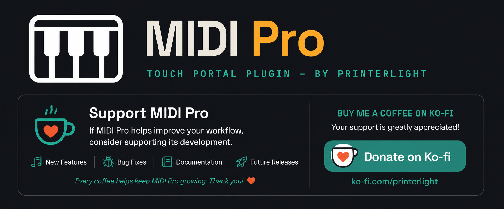

MIDI Pro
Bidirectional MIDI control for Touch Portal — send notes, CC, pitch bend and program changes, then watch every transmission come alive on screen through live runtime telemetry.
Features
🎹
Seven Send Actions
Note, CC, CC Relative, Pitch Bend, Program Change, Panic, and MIDI Learn.
🎚️
Eight Connectors
Sliders and dials with independent up/down packet assignment and full sensitivity control.
📡
Runtime Telemetry
Every named control publishes live states the instant it transmits — no external feedback loop.
🔍
MIDI Learn
Full diagnostic breakdown of any incoming message — type, value, raw hex, device, timestamp.
⚡
TX Events
Five generic automation triggers, one per MIDI protocol, for workflows that react to anything.
🚨
Panic Button
Emergency All Notes Off, one tap away, on every page you build.
Platform Support
🪟 Windows
Supported
🍎 macOS
In Development
🐧 Linux
Planned
Roadmap
RC1 — Current
Feature frozen. Public action, connector, state, and event IDs will not change except for bug fixes.
RC2 — Planned
Translator, Input Bindings, RX Runtime States, and expanded automation workflows.
Support Development

Prefer PayPal instead? paypal.me/printerlight